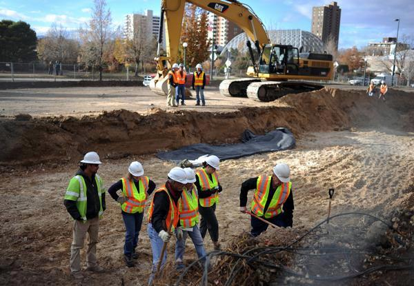

VIT University, also known as Vellore Institute of Technology (VIT), formerly known as Vellore Engineering College, is a private university in Tamil Nadu, India. Founded in 1984, as Vellore Engineering College, by G. Viswanathan, the institution offers 20 undergraduate, 34 postgraduate, four integrated and four research programs. It has campuses in Vellore and Chennai, Tamil Nadu, India. A new 200-acre campus called VIT-AP located at Amaravati (the new state capital of Andhra Pradesh state) is under construction. Classes will be started in July 2017. N. Chandrababu Naidu, the Chief Minister of Andhra Pradesh and M. Venkaiah Naidu, a Union Minister, participated in the foundation ceremony. Foundation stone for VIT Bhopal campus at Sehore, Madhya Pradesh was laid down by Shivraj Singh Chouhan (Chief Minister of Madhya Pradesh) on 20 October 2016.
